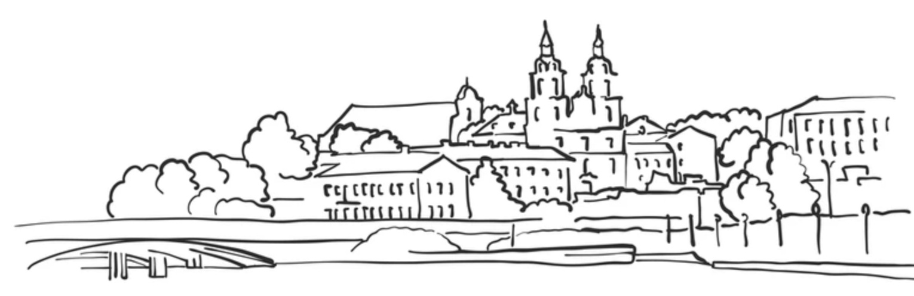

Схема
Достопримечательности
Полезные ссылки
Их именами названы улицы
Отзыв о поездке
Сайты, где вы сможете познакомиться поближе с Беларусью в целом и с Минском в частности
Сайт Президента Беларуси
Сайт Walker.by. Гид по Минску
Туристический портал Минска
Туристический портал Беларуси belarus.travel
Карта для детей с достопримечательностями Минска
Культурная жизнь Минска, или куда сходить
Городской журнал "Как тут жить"
Afisha24. Купить билеты на любой спектакль в Беларуси
Афиша Relax.by. Также купить билет на любой спектаклю Беларуси
Голод не тётка! Лучшие рестораны Минска
Лучшие кафе и рестораны Минска
